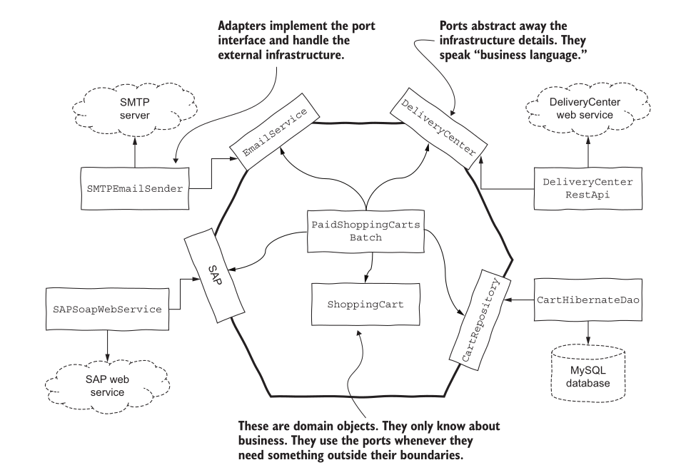

Architecture: boundaries
Quick recap
- SOLID — principles for one class
- Component principles — what ships together, and which way components point
The question
Where does design end and architecture begin?
Hold that. It gets answered at the end.
Four scales
| Scale | Unit | Asks |
|---|---|---|
| Code | a function | can a reader follow this? |
| Class | one class | what makes it change? |
| Component | a group of classes | which way do dependencies point? |
| System | the whole thing | what is inside the boundary? |
This lecture is the top row.
Start with a small system
A snake game that remembers the high score.
class Game:
def finish(self, score):
best = json.load(open("score.json"))["best"]
if score > best:
json.dump({"best": score}, open("score.json", "w"))
Works. Ships. Now three change requests arrive.
Change request 1
"Store scores in a database, not a file."
What do you edit? Game.
Change request 2
"Show a leaderboard on a website."
What do you edit? Game — it is the only thing that knows where scores live.
Change request 3
"Let two players share one leaderboard over the network."
What do you edit? Game. Again.
Look at what changed
| Changes how often | |
|---|---|
| the rule — a high score is saved only if beaten | almost never |
| where scores are stored | three times this term |
The part that changes least is being edited for the parts that change most.
So which way should the dependency point?
The dependency rule
Source code dependencies point inward — toward the rules, never away from them.
The rules know nothing about files, databases, or websites. The file, database and website all know about the rules.
The rings
| Ring | Contains | Changes |
|---|---|---|
| Entities | business rules — a high score is kept only if beaten | rarely |
| Use cases | application flow — finish a game, record the result | sometimes |
| Adapters | translate between rules and the outside | often |
| Frameworks & drivers | database, web server, UI toolkit | constantly |
Dependencies cross rings inward only. Nothing inside names anything outside.
Ports and adapters

- Port — an interface the core owns, describing what it needs
- Adapter — an implementation outside, plugged into a port
The core states what it needs. It does not say who provides it.
The game, rebuilt
The core owns the rule and the port:
class ScoreStore(Protocol): # the port
def best(self) -> int: ...
def save(self, score: int) -> None: ...
class Game:
def __init__(self, store: ScoreStore):
self._store = store
def finish(self, score: int) -> bool:
if score > self._store.best():
self._store.save(score)
return True
return False
No json. No open. No filename.
Adapters, outside
class FileScoreStore:
def __init__(self, path): self.path = path
def best(self):
return json.load(open(self.path))["best"] if os.path.exists(self.path) else 0
def save(self, score):
json.dump({"best": score}, open(self.path, "w"))
class InMemoryScoreStore:
def __init__(self): self._best = 0
def best(self): return self._best
def save(self, score): self._best = score
Same Game, both stores, scores 40, 30, 55:
FileScoreStore True False True best=55
InMemoryScoreStore True False True best=55
The three change requests, again
| Request | Before | Now |
|---|---|---|
| database instead of file | edit Game |
write PostgresScoreStore |
| leaderboard website | edit Game |
web adapter reads the same port |
| shared over network | edit Game |
write NetworkScoreStore |
Game is edited zero times.
What a boundary buys
A boundary lets you make a decision later.
| Decision | Without a boundary | With one |
|---|---|---|
| which database | before writing game logic | when you have real data |
| which web framework | before the first screen | when you know what the screens are |
| file, cloud, or network | day one | whenever it actually matters |
Good architecture maximises the number of decisions not yet made.
The rules can be written, run and tested before any of those decisions exist.
What a boundary costs
Not free:
- one more interface to name and keep honest
- one more file to read before you find the real code
- indirection a newcomer has to trace
A 200-line script with one storage option does not need a port.
Draw a boundary where something on the other side is likely to change — not everywhere a boundary could be drawn.
💬 Which way does it point?
Each line is an import inside the file named on the left. Inward or outward?
| File | Imports |
|---|---|
a. game.py |
from storage.postgres import PostgresScoreStore |
b. postgres_store.py |
from game import ScoreStore |
c. web/leaderboard.py |
from game import Game |
d. game.py |
import flask |
Answer
| Direction | Verdict | |
|---|---|---|
| a | rules → database | outward. Violation |
| b | database → rules | inward. Correct |
| c | web → rules | inward. Correct |
| d | rules → framework | outward. Violation |
The test is one question: does the file with the rules name anything that changes more often than the rules do? If yes, the arrow points the wrong way.
💬 Where is the boundary in your snake game?
List every place your game touches the outside world: keyboard, screen, clock, random numbers, files.
For each one: does your game logic name it directly, or does it depend on something the core owns?
What to look for
Most snake games have no boundary at all. Game logic calls getch(),
Sleep(), rand(), cout and ofstream directly.
That is not wrong for a first version. It means every one of those is a decision made on day one that cannot now be changed without editing the rules.
Pick the one most likely to change. That is where your first port goes.
Back to the question
Where does design end and architecture begin?
It doesn't. Same question, different scale.
| Concern | Class | Component | System |
|---|---|---|---|
| one reason to change | SRP | CCP | a ring changes for one kind of reason |
| depend on abstractions | DIP | SAP | the dependency rule |
| don't force unused dependencies | ISP | CRP | ports expose only what the core needs |
Architecture is design where the unit is the whole system and the cost of a wrong arrow is highest.
References:
- Chapter 22, The Clean Architecture — Clean Architecture, Robert C. Martin
- Hexagonal Architecture — Alistair Cockburn